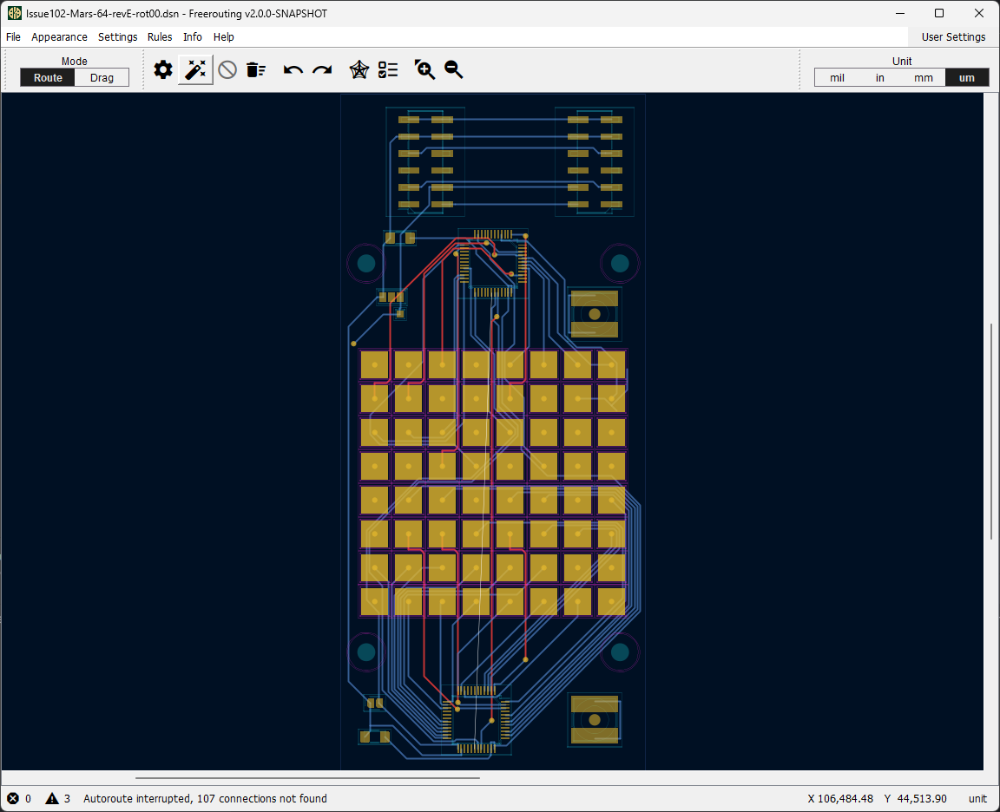

⚠️ Planned API maintenance
The Freerouting API will be unavailable on Wednesday, August 19, 2026, from 06:00 to 18:00 UTC due to planned maintenance.
Please plan your API workloads accordingly. We apologize for the inconvenience.
About Freerouting
Freerouting is an open-source, fully-automated PCB routing software designed for engineers, PCB designers, and hobbyists. It simplifies the complex and time-consuming process of routing printed circuit boards, making it faster and easier to create intricate and high-quality designs.
Freerouting Interface

Key Features
- Enhanced Configuration Flexibility: Customize your workflow using JSON configuration files, environment variables, command-line arguments, or the graphical interface.
- Localization Support: Improved language support for global users, including streamlined sentence templates and placeholder control for easier translation.
- API Access (Beta): Freerouting now has a public API that integrates seamlessly with popular EDA tools like KiCad, EasyEDA, and tscircuit, expanding its usability and interoperability.
- MCP Server: Connect Freerouting to AI coding assistants (Cursor, Cline, Claude Desktop) via the Model Context Protocol so agents can upload designs, run routing jobs, and download results on your behalf.
- CLI Interface: Freerouting now fully supports command-line operation, allowing you to automate and control your routing tasks without a graphical interface.
- Multi-Threaded Routing Job Scheduler: Freerouting can handle multiple routing tasks simultaneously, significantly improving performance and efficiency.
- Multi-Platform Support: Freerouting is compatible with Windows, Linux, macOS, and offers Docker images for both ARM64 and x64 architectures.
MCP Server for AI Assistants
Freerouting includes a Model Context Protocol (MCP) server that lets LLM-based coding
assistants control the router directly from your editor or chat. Instead of clicking through the GUI, an
agent can create a session, upload a .dsn design, adjust settings, start autorouting, poll job
progress, and retrieve the finished .ses session file — all as structured tool calls.
Requirements: MCP tools talk to a Freerouting REST API backend, so you need one of the following before you can route boards from an AI assistant:
- Public API: A valid Freerouting API key — use the
Request API Access button above
to obtain one, then configure it in your MCP client (for example as
FREEROUTING_API_KEY). - Local / self-hosted: A Freerouting executable running on your machine with the REST API and MCP server enabled (typical for offline use or when design files must stay on your computer).
Why use it?
- Automate repetitive routing workflows: Batch-route boards, tweak settings, and re-run passes without leaving your AI assistant.
- Fits your existing toolchain: Works with Cursor, Cline, Roo Cline, Claude Desktop, and other MCP-capable clients — the same assistants you already use for code.
- Flexible deployment: Use the lightweight
npx @freerouting/freerouting-mcp-serverbridge against the public API for a quick start, or run the Java executable locally with MCP enabled so board data never leaves your machine. - Token-efficient file handling: Tools can upload and download design files from disk instead of stuffing Base64 into the model context, which keeps conversations fast and affordable.
- Full API surface as tools: Nearly every REST endpoint is exposed as an MCP tool, so agents can orchestrate the complete routing pipeline end to end.
Benefits for Users
Freerouting offers substantial advantages for PCB designers and engineers:
- Save Time and Boost Efficiency: With its automated routing and multi-threaded scheduling, Freerouting enables faster board design, saving valuable time.
- High Degree of Customization: Freerouting adapts to your preferred workflow, with flexible configuration options available through multiple methods.
- Integrate into Existing Toolchains: The public API allows easy integration into various EDA environments, offering a more seamless workflow.
- Improved Localization: Freerouting’s enhanced localization tools allow users to work in their preferred language without awkward phrasing or misaligned templates.
- Cross-Platform Accessibility: Use Freerouting on Windows, Linux, and macOS, ensuring compatibility across popular operating systems.
Sponsors
A heartfelt thank you to my sponsors for their invaluable support and motivation, which enables me to continue volunteering as the sole developer and maintainer of Freerouting.
Since I’m currently the only active contributor to Freerouting, even a small monthly contribution would be greatly appreciated. If you’d like to support this project, please consider sponsoring me: GitHub Sponsors. Thank you!